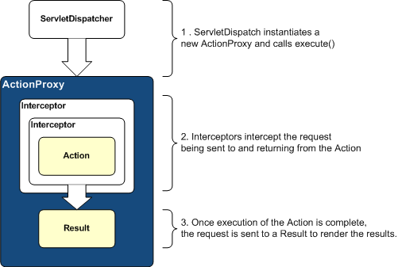

| The default Interceptor stack is designed to serve the needs of most applications. Most applications will not need to add Interceptors or change the Interceptor stack. |
Many Actions share common concerns. Some Actions need input validated. Other Actions may need a file upload to be pre-processed. Another Action might need protection from a double submit. Many Actions need drop-down lists and other controls pre-populated before the page displays.
The framework makes it easy to share solutions to these concerns using an "Interceptor" strategy. When you request a resource that maps to an "action", the framework invokes the Action object. But, before the Action is executed, the invocation can be intercepted by another object. After the Action executes, the invocation could be intercepted again. Unsurprisingly, we call these objects "Interceptors."
Understanding Interceptors
Interceptors can execute code before and after an Action is invoked. Most of the framework's core functionality is implemented as Interceptors. Features like double-submit guards, type conversion, object population, validation, file upload, page preparation, and more, are all implemented with the help of Interceptors. Each and every Interceptor is pluggable, so you can decide exactly which features an Action needs to support.
Interceptors can be configured on a per-action basis. Your own custom Interceptors can be mixed-and-matched with the Interceptors bundled with the framework. Interceptors "set the stage" for the Action classes, doing much of the "heavy lifting" before the Action executes.
| Action Lifecyle |
|---|
|  |
In some cases, an Interceptor might keep an Action from firing, because of a double-submit or because validation failed. Interceptors can also change the state of an Action before it executes.
The Interceptors are defined in a stack that specifies the execution order. In some cases, the order of the Interceptors on the stack can be very important.
Configuring Interceptors
<package name="default" extends="struts-default"> <interceptors> <interceptor name="timer" class=".."/> <interceptor name="logger" class=".."/> </interceptors> <action name="login" class="tutorial.Login"> <interceptor-ref name="timer"/> <interceptor-ref name="logger"/> <result name="input">login.jsp</result> <result name="success" type="redirectAction">/secure/home</result> </action> </package>
Stacking Interceptors
With most web applications, we find ourselves wanting to apply the same set of Interceptors over and over again. Rather than reiterate the same list of Interceptors, we can bundle these Interceptors together using an Interceptor Stack.
<package name="default" extends="struts-default"> <interceptors> <interceptor name="timer" class=".."/> <interceptor name="logger" class=".."/> <interceptor-stack name="myStack"> <interceptor-ref name="timer"/> <interceptor-ref name="logger"/> </interceptor-stack> </interceptors> <action name="login" class="tutuorial.Login"> <interceptor-ref name="myStack"/> <result name="input">login.jsp</result> <result name="success" type="redirectAction">/secure/home</result> </action> </package>
Looking inside struts-default.xml, we can see how it's done.
The Default Configuration
<?xml version="1.0" encoding="UTF-8" ?> <!-- /* * $Id$ * * Licensed to the Apache Software Foundation (ASF) under one * or more contributor license agreements. See the NOTICE file * distributed with this work for additional information * regarding copyright ownership. The ASF licenses this file * to you under the Apache License, Version 2.0 (the * "License"); you may not use this file except in compliance * with the License. You may obtain a copy of the License at * * http://www.apache.org/licenses/LICENSE-2.0 * * Unless required by applicable law or agreed to in writing, * software distributed under the License is distributed on an * "AS IS" BASIS, WITHOUT WARRANTIES OR CONDITIONS OF ANY * KIND, either express or implied. See the License for the * specific language governing permissions and limitations * under the License. */ --> <!DOCTYPE struts PUBLIC "-//Apache Software Foundation//DTD Struts Configuration 2.3//EN" "http://struts.apache.org/dtds/struts-2.3.dtd"> <struts> <bean class="com.opensymphony.xwork2.ObjectFactory" name="xwork" /> <bean type="com.opensymphony.xwork2.ObjectFactory" name="struts" class="org.apache.struts2.impl.StrutsObjectFactory" /> <bean type="com.opensymphony.xwork2.FileManager" class="com.opensymphony.xwork2.util.fs.DefaultFileManager" name="system" scope="singleton"/> <bean type="com.opensymphony.xwork2.FileManagerFactory" class="com.opensymphony.xwork2.util.fs.DefaultFileManagerFactory" name="xwork" scope="singleton"/> <bean type="com.opensymphony.xwork2.FileManagerFactory" class="com.opensymphony.xwork2.util.fs.DefaultFileManagerFactory" name="struts" scope="singleton"/> <bean type="com.opensymphony.xwork2.ActionProxyFactory" name="xwork" class="com.opensymphony.xwork2.DefaultActionProxyFactory"/> <bean type="com.opensymphony.xwork2.ActionProxyFactory" name="struts" class="org.apache.struts2.impl.StrutsActionProxyFactory"/> <bean type="com.opensymphony.xwork2.conversion.ObjectTypeDeterminer" name="tiger" class="com.opensymphony.xwork2.conversion.impl.DefaultObjectTypeDeterminer"/> <bean type="com.opensymphony.xwork2.conversion.ObjectTypeDeterminer" name="notiger" class="com.opensymphony.xwork2.conversion.impl.DefaultObjectTypeDeterminer"/> <bean type="com.opensymphony.xwork2.conversion.ObjectTypeDeterminer" name="struts" class="com.opensymphony.xwork2.conversion.impl.DefaultObjectTypeDeterminer"/> <bean type="com.opensymphony.xwork2.util.PatternMatcher" name="struts" class="com.opensymphony.xwork2.util.WildcardHelper" /> <bean type="com.opensymphony.xwork2.util.PatternMatcher" name="namedVariable" class="com.opensymphony.xwork2.util.NamedVariablePatternMatcher"/> <bean type="com.opensymphony.xwork2.util.PatternMatcher" name="regex" class="org.apache.struts2.util.RegexPatternMatcher"/> <bean type="org.apache.struts2.dispatcher.mapper.ActionMapper" name="struts" class="org.apache.struts2.dispatcher.mapper.DefaultActionMapper" /> <bean type="org.apache.struts2.dispatcher.mapper.ActionMapper" name="composite" class="org.apache.struts2.dispatcher.mapper.CompositeActionMapper" /> <bean type="org.apache.struts2.dispatcher.mapper.ActionMapper" name="restful" class="org.apache.struts2.dispatcher.mapper.RestfulActionMapper" /> <bean type="org.apache.struts2.dispatcher.mapper.ActionMapper" name="restful2" class="org.apache.struts2.dispatcher.mapper.Restful2ActionMapper" /> <bean type="org.apache.struts2.dispatcher.multipart.MultiPartRequest" name="struts" class="org.apache.struts2.dispatcher.multipart.JakartaMultiPartRequest" scope="default"/> <bean type="org.apache.struts2.dispatcher.multipart.MultiPartRequest" name="jakarta" class="org.apache.struts2.dispatcher.multipart.JakartaMultiPartRequest" scope="default" /> <constant name="struts.multipart.parser" value="jakarta" /> <bean type="org.apache.struts2.views.TagLibrary" name="s" class="org.apache.struts2.views.DefaultTagLibrary" /> <bean class="org.apache.struts2.views.freemarker.FreemarkerManager" name="struts" /> <bean class="org.apache.struts2.views.velocity.VelocityManager" name="struts" optional="true" /> <bean class="org.apache.struts2.components.template.TemplateEngineManager" /> <bean type="org.apache.struts2.components.template.TemplateEngine" name="ftl" class="org.apache.struts2.components.template.FreemarkerTemplateEngine" /> <bean type="org.apache.struts2.components.template.TemplateEngine" name="vm" class="org.apache.struts2.components.template.VelocityTemplateEngine" /> <bean type="org.apache.struts2.components.template.TemplateEngine" name="jsp" class="org.apache.struts2.components.template.JspTemplateEngine" /> <bean type="com.opensymphony.xwork2.conversion.impl.XWorkConverter" name="struts" class="com.opensymphony.xwork2.conversion.impl.XWorkConverter" /> <bean type="com.opensymphony.xwork2.conversion.ConversionPropertiesProcessor" name="struts" class="com.opensymphony.xwork2.conversion.impl.DefaultConversionPropertiesProcessor" /> <bean type="com.opensymphony.xwork2.conversion.ConversionFileProcessor" name="struts" class="com.opensymphony.xwork2.conversion.impl.DefaultConversionFileProcessor" /> <bean type="com.opensymphony.xwork2.conversion.ConversionAnnotationProcessor" name="struts" class="com.opensymphony.xwork2.conversion.impl.DefaultConversionAnnotationProcessor" /> <bean type="com.opensymphony.xwork2.conversion.TypeConverterCreator" name="struts" class="com.opensymphony.xwork2.conversion.impl.DefaultTypeConverterCreator" /> <bean type="com.opensymphony.xwork2.conversion.TypeConverterHolder" name="struts" class="com.opensymphony.xwork2.conversion.impl.DefaultTypeConverterHolder" /> <bean class="com.opensymphony.xwork2.conversion.impl.XWorkBasicConverter" /> <bean type="com.opensymphony.xwork2.conversion.impl.CollectionConverter" name="struts" class="com.opensymphony.xwork2.conversion.impl.CollectionConverter" scope="singleton"/> <bean type="com.opensymphony.xwork2.conversion.impl.ArrayConverter" name="struts" class="com.opensymphony.xwork2.conversion.impl.ArrayConverter" scope="singleton"/> <bean type="com.opensymphony.xwork2.conversion.impl.DateConverter" name="struts" class="com.opensymphony.xwork2.conversion.impl.DateConverter" scope="singleton"/> <bean type="com.opensymphony.xwork2.conversion.impl.NumberConverter" name="struts" class="com.opensymphony.xwork2.conversion.impl.NumberConverter" scope="singleton"/> <bean type="com.opensymphony.xwork2.conversion.impl.StringConverter" name="struts" class="com.opensymphony.xwork2.conversion.impl.StringConverter" scope="singleton"/> <bean type="com.opensymphony.xwork2.TextProvider" name="struts" class="com.opensymphony.xwork2.TextProviderSupport" scope="default" /> <bean type="com.opensymphony.xwork2.LocaleProvider" name="struts" class="com.opensymphony.xwork2.DefaultLocaleProvider" scope="singleton" /> <bean type="org.apache.struts2.components.UrlRenderer" name="struts" class="org.apache.struts2.components.ServletUrlRenderer"/> <bean type="org.apache.struts2.views.util.UrlHelper" name="struts" class="org.apache.struts2.views.util.DefaultUrlHelper"/> <bean type="com.opensymphony.xwork2.util.ValueStackFactory" name="struts" class="com.opensymphony.xwork2.ognl.OgnlValueStackFactory" /> <bean type="com.opensymphony.xwork2.util.reflection.ReflectionProvider" name="struts" class="com.opensymphony.xwork2.ognl.OgnlReflectionProvider" /> <bean type="com.opensymphony.xwork2.util.reflection.ReflectionContextFactory" name="struts" class="com.opensymphony.xwork2.ognl.OgnlReflectionContextFactory" /> <bean type="com.opensymphony.xwork2.TextProvider" name="system" class="com.opensymphony.xwork2.DefaultTextProvider" /> <bean type="com.opensymphony.xwork2.conversion.NullHandler" name="java.lang.Object" class="com.opensymphony.xwork2.conversion.impl.InstantiatingNullHandler" /> <bean type="com.opensymphony.xwork2.validator.ActionValidatorManager" name="struts" class="com.opensymphony.xwork2.validator.AnnotationActionValidatorManager" /> <bean type="com.opensymphony.xwork2.validator.ActionValidatorManager" name="no-annotations" class="com.opensymphony.xwork2.validator.DefaultActionValidatorManager" /> <bean type="com.opensymphony.xwork2.validator.ValidatorFactory" class="com.opensymphony.xwork2.validator.DefaultValidatorFactory"/> <bean type="com.opensymphony.xwork2.validator.ValidatorFileParser" class="com.opensymphony.xwork2.validator.DefaultValidatorFileParser" /> <bean class="com.opensymphony.xwork2.ognl.OgnlUtil" /> <bean type="com.opensymphony.xwork2.util.TextParser" name="struts" class="com.opensymphony.xwork2.util.OgnlTextParser" scope="singleton"/> <bean type="ognl.PropertyAccessor" name="com.opensymphony.xwork2.util.CompoundRoot" class="com.opensymphony.xwork2.ognl.accessor.CompoundRootAccessor" /> <bean type="ognl.PropertyAccessor" name="java.lang.Object" class="com.opensymphony.xwork2.ognl.accessor.ObjectAccessor" /> <bean type="ognl.PropertyAccessor" name="java.util.Iterator" class="com.opensymphony.xwork2.ognl.accessor.XWorkIteratorPropertyAccessor" /> <bean type="ognl.PropertyAccessor" name="java.util.Enumeration" class="com.opensymphony.xwork2.ognl.accessor.XWorkEnumerationAccessor" /> <bean type="ognl.PropertyAccessor" name="java.util.List" class="com.opensymphony.xwork2.ognl.accessor.XWorkListPropertyAccessor" /> <bean type="ognl.PropertyAccessor" name="java.util.Set" class="com.opensymphony.xwork2.ognl.accessor.XWorkCollectionPropertyAccessor" /> <bean type="ognl.PropertyAccessor" name="java.util.Map" class="com.opensymphony.xwork2.ognl.accessor.XWorkMapPropertyAccessor" /> <bean type="ognl.PropertyAccessor" name="java.util.Collection" class="com.opensymphony.xwork2.ognl.accessor.XWorkCollectionPropertyAccessor" /> <bean type="ognl.PropertyAccessor" name="com.opensymphony.xwork2.ognl.ObjectProxy" class="com.opensymphony.xwork2.ognl.accessor.ObjectProxyPropertyAccessor" /> <bean type="ognl.MethodAccessor" name="java.lang.Object" class="com.opensymphony.xwork2.ognl.accessor.XWorkMethodAccessor" /> <bean type="ognl.MethodAccessor" name="com.opensymphony.xwork2.util.CompoundRoot" class="com.opensymphony.xwork2.ognl.accessor.CompoundRootAccessor" /> <bean class="org.apache.struts2.views.jsp.ui.OgnlTool" /> <bean type="org.apache.struts2.dispatcher.StaticContentLoader" class="org.apache.struts2.dispatcher.DefaultStaticContentLoader" name="struts" /> <bean type="com.opensymphony.xwork2.UnknownHandlerManager" class="com.opensymphony.xwork2.DefaultUnknownHandlerManager" name="struts" /> <!-- Silly workarounds for OGNL since there is currently no way to flush its internal caches --> <bean type="ognl.PropertyAccessor" name="java.util.ArrayList" class="com.opensymphony.xwork2.ognl.accessor.XWorkListPropertyAccessor" /> <bean type="ognl.PropertyAccessor" name="java.util.HashSet" class="com.opensymphony.xwork2.ognl.accessor.XWorkCollectionPropertyAccessor" /> <bean type="ognl.PropertyAccessor" name="java.util.HashMap" class="com.opensymphony.xwork2.ognl.accessor.XWorkMapPropertyAccessor" /> <package name="struts-default" abstract="true"> <result-types> <result-type name="chain" class="com.opensymphony.xwork2.ActionChainResult"/> <result-type name="dispatcher" class="org.apache.struts2.dispatcher.ServletDispatcherResult" default="true"/> <result-type name="freemarker" class="org.apache.struts2.views.freemarker.FreemarkerResult"/> <result-type name="httpheader" class="org.apache.struts2.dispatcher.HttpHeaderResult"/> <result-type name="redirect" class="org.apache.struts2.dispatcher.ServletRedirectResult"/> <result-type name="redirectAction" class="org.apache.struts2.dispatcher.ServletActionRedirectResult"/> <result-type name="stream" class="org.apache.struts2.dispatcher.StreamResult"/> <result-type name="velocity" class="org.apache.struts2.dispatcher.VelocityResult"/> <result-type name="xslt" class="org.apache.struts2.views.xslt.XSLTResult"/> <result-type name="plainText" class="org.apache.struts2.dispatcher.PlainTextResult" /> </result-types> <interceptors> <interceptor name="alias" class="com.opensymphony.xwork2.interceptor.AliasInterceptor"/> <interceptor name="autowiring" class="com.opensymphony.xwork2.spring.interceptor.ActionAutowiringInterceptor"/> <interceptor name="chain" class="com.opensymphony.xwork2.interceptor.ChainingInterceptor"/> <interceptor name="conversionError" class="org.apache.struts2.interceptor.StrutsConversionErrorInterceptor"/> <interceptor name="cookie" class="org.apache.struts2.interceptor.CookieInterceptor"/> <interceptor name="clearSession" class="org.apache.struts2.interceptor.ClearSessionInterceptor" /> <interceptor name="createSession" class="org.apache.struts2.interceptor.CreateSessionInterceptor" /> <interceptor name="debugging" class="org.apache.struts2.interceptor.debugging.DebuggingInterceptor" /> <interceptor name="execAndWait" class="org.apache.struts2.interceptor.ExecuteAndWaitInterceptor"/> <interceptor name="exception" class="com.opensymphony.xwork2.interceptor.ExceptionMappingInterceptor"/> <interceptor name="fileUpload" class="org.apache.struts2.interceptor.FileUploadInterceptor"/> <interceptor name="i18n" class="com.opensymphony.xwork2.interceptor.I18nInterceptor"/> <interceptor name="logger" class="com.opensymphony.xwork2.interceptor.LoggingInterceptor"/> <interceptor name="modelDriven" class="com.opensymphony.xwork2.interceptor.ModelDrivenInterceptor"/> <interceptor name="scopedModelDriven" class="com.opensymphony.xwork2.interceptor.ScopedModelDrivenInterceptor"/> <interceptor name="params" class="com.opensymphony.xwork2.interceptor.ParametersInterceptor"/> <interceptor name="actionMappingParams" class="org.apache.struts2.interceptor.ActionMappingParametersInteceptor"/> <interceptor name="prepare" class="com.opensymphony.xwork2.interceptor.PrepareInterceptor"/> <interceptor name="staticParams" class="com.opensymphony.xwork2.interceptor.StaticParametersInterceptor"/> <interceptor name="scope" class="org.apache.struts2.interceptor.ScopeInterceptor"/> <interceptor name="servletConfig" class="org.apache.struts2.interceptor.ServletConfigInterceptor"/> <interceptor name="timer" class="com.opensymphony.xwork2.interceptor.TimerInterceptor"/> <interceptor name="token" class="org.apache.struts2.interceptor.TokenInterceptor"/> <interceptor name="tokenSession" class="org.apache.struts2.interceptor.TokenSessionStoreInterceptor"/> <interceptor name="validation" class="org.apache.struts2.interceptor.validation.AnnotationValidationInterceptor"/> <interceptor name="workflow" class="com.opensymphony.xwork2.interceptor.DefaultWorkflowInterceptor"/> <interceptor name="store" class="org.apache.struts2.interceptor.MessageStoreInterceptor" /> <interceptor name="checkbox" class="org.apache.struts2.interceptor.CheckboxInterceptor" /> <interceptor name="profiling" class="org.apache.struts2.interceptor.ProfilingActivationInterceptor" /> <interceptor name="roles" class="org.apache.struts2.interceptor.RolesInterceptor" /> <interceptor name="annotationWorkflow" class="com.opensymphony.xwork2.interceptor.annotations.AnnotationWorkflowInterceptor" /> <interceptor name="multiselect" class="org.apache.struts2.interceptor.MultiselectInterceptor" /> <!-- Basic stack --> <interceptor-stack name="basicStack"> <interceptor-ref name="exception"/> <interceptor-ref name="servletConfig"/> <interceptor-ref name="prepare"/> <interceptor-ref name="checkbox"/> <interceptor-ref name="multiselect"/> <interceptor-ref name="actionMappingParams"/> <interceptor-ref name="params"> <param name="excludeParams">dojo\..*,^struts\..*,^session\..*,^request\..*,^application\..*,^servlet(Request|Response)\..*,parameters\...*</param> </interceptor-ref> <interceptor-ref name="conversionError"/> </interceptor-stack> <!-- Sample validation and workflow stack --> <interceptor-stack name="validationWorkflowStack"> <interceptor-ref name="basicStack"/> <interceptor-ref name="validation"/> <interceptor-ref name="workflow"/> </interceptor-stack> <!-- Sample file upload stack --> <interceptor-stack name="fileUploadStack"> <interceptor-ref name="fileUpload"/> <interceptor-ref name="basicStack"/> </interceptor-stack> <!-- Sample model-driven stack --> <interceptor-stack name="modelDrivenStack"> <interceptor-ref name="modelDriven"/> <interceptor-ref name="basicStack"/> </interceptor-stack> <!-- Sample action chaining stack --> <interceptor-stack name="chainStack"> <interceptor-ref name="chain"/> <interceptor-ref name="basicStack"/> </interceptor-stack> <!-- Sample i18n stack --> <interceptor-stack name="i18nStack"> <interceptor-ref name="i18n"/> <interceptor-ref name="basicStack"/> </interceptor-stack> <!-- An example of the paramsPrepareParams trick. This stack is exactly the same as the defaultStack, except that it includes one extra interceptor before the prepare interceptor: the params interceptor. This is useful for when you wish to apply parameters directly to an object that you wish to load externally (such as a DAO or database or service layer), but can't load that object until at least the ID parameter has been loaded. By loading the parameters twice, you can retrieve the object in the prepare() method, allowing the second params interceptor to apply the values on the object. --> <interceptor-stack name="paramsPrepareParamsStack"> <interceptor-ref name="exception"/> <interceptor-ref name="alias"/> <interceptor-ref name="i18n"/> <interceptor-ref name="checkbox"/> <interceptor-ref name="multiselect"/> <interceptor-ref name="params"> <param name="excludeParams">dojo\..*,^struts\..*,^session\..*,^request\..*,^application\..*,^servlet(Request|Response)\..*,parameters\...*</param> </interceptor-ref> <interceptor-ref name="servletConfig"/> <interceptor-ref name="prepare"/> <interceptor-ref name="chain"/> <interceptor-ref name="modelDriven"/> <interceptor-ref name="fileUpload"/> <interceptor-ref name="staticParams"/> <interceptor-ref name="actionMappingParams"/> <interceptor-ref name="params"> <param name="excludeParams">dojo\..*,^struts\..*,^session\..*,^request\..*,^application\..*,^servlet(Request|Response)\..*,parameters\...*</param> </interceptor-ref> <interceptor-ref name="conversionError"/> <interceptor-ref name="validation"> <param name="excludeMethods">input,back,cancel,browse</param> </interceptor-ref> <interceptor-ref name="workflow"> <param name="excludeMethods">input,back,cancel,browse</param> </interceptor-ref> </interceptor-stack> <!-- A complete stack with all the common interceptors in place. Generally, this stack should be the one you use, though it may do more than you need. Also, the ordering can be switched around (ex: if you wish to have your servlet-related objects applied before prepare() is called, you'd need to move servletConfig interceptor up. This stack also excludes from the normal validation and workflow the method names input, back, and cancel. These typically are associated with requests that should not be validated. --> <interceptor-stack name="defaultStack"> <interceptor-ref name="exception"/> <interceptor-ref name="alias"/> <interceptor-ref name="servletConfig"/> <interceptor-ref name="i18n"/> <interceptor-ref name="prepare"/> <interceptor-ref name="chain"/> <interceptor-ref name="scopedModelDriven"/> <interceptor-ref name="modelDriven"/> <interceptor-ref name="fileUpload"/> <interceptor-ref name="checkbox"/> <interceptor-ref name="multiselect"/> <interceptor-ref name="staticParams"/> <interceptor-ref name="actionMappingParams"/> <interceptor-ref name="params"> <param name="excludeParams">dojo\..*,^struts\..*,^session\..*,^request\..*,^application\..*,^servlet(Request|Response)\..*,parameters\...*</param> </interceptor-ref> <interceptor-ref name="conversionError"/> <interceptor-ref name="validation"> <param name="excludeMethods">input,back,cancel,browse</param> </interceptor-ref> <interceptor-ref name="workflow"> <param name="excludeMethods">input,back,cancel,browse</param> </interceptor-ref> <interceptor-ref name="debugging"/> </interceptor-stack> <!-- The completeStack is here for backwards compatibility for applications that still refer to the defaultStack by the old name --> <interceptor-stack name="completeStack"> <interceptor-ref name="defaultStack"/> </interceptor-stack> <!-- Sample execute and wait stack. Note: execAndWait should always be the *last* interceptor. --> <interceptor-stack name="executeAndWaitStack"> <interceptor-ref name="execAndWait"> <param name="excludeMethods">input,back,cancel</param> </interceptor-ref> <interceptor-ref name="defaultStack"/> <interceptor-ref name="execAndWait"> <param name="excludeMethods">input,back,cancel</param> </interceptor-ref> </interceptor-stack> </interceptors> <default-interceptor-ref name="defaultStack"/> <default-class-ref class="com.opensymphony.xwork2.ActionSupport" /> </package> </struts>
Since the struts-default.xml is included in the application's configuration by default, all of the predefined interceptors and stacks are available "out of the box".
Framework Interceptors
Interceptor classes are also defined using a key-value pair specified in the Struts configuration file. The names specified below come specified in struts-default.xml. If you extend the struts-default package, then you can use the names below. Otherwise, they must be defined in your package with a name-class pair specified in the <interceptors> tag.
| Interceptor | Name | Description |
|---|---|---|
| Alias Interceptor | alias | Converts similar parameters that may be named differently between requests. |
| Chaining Interceptor | chain | Makes the previous Action's properties available to the current Action. Commonly used together with <result type="chain"> (in the previous Action). |
| Checkbox Interceptor | checkbox | Adds automatic checkbox handling code that detect an unchecked checkbox and add it as a parameter with a default (usually 'false') value. Uses a specially named hidden field to detect unsubmitted checkboxes. The default unchecked value is overridable for non-boolean value'd checkboxes. |
| Cookie Interceptor | cookie | Inject cookie with a certain configurable name / value into action. (Since 2.0.7.) |
| Conversion Error Interceptor | conversionError | Adds conversion errors from the ActionContext to the Action's field errors |
| Create Session Interceptor | createSession | Create an HttpSession automatically, useful with certain Interceptors that require a HttpSession to work properly (like the TokenInterceptor) |
| DebuggingInterceptor | debugging | Provides several different debugging screens to provide insight into the data behind the page. |
| Execute and Wait Interceptor | execAndWait | Executes the Action in the background and then sends the user off to an intermediate waiting page. |
| Exception Interceptor | exception | Maps exceptions to a result. |
| File Upload Interceptor | fileUpload | An Interceptor that adds easy access to file upload support. |
| I18n Interceptor | i18n | Remembers the locale selected for a user's session. |
| Logger Interceptor | logger | Outputs the name of the Action. |
| Message Store Interceptor | store | Store and retrieve action messages / errors / field errors for action that implements ValidationAware interface into session. |
| Model Driven Interceptor | modelDriven | If the Action implements ModelDriven, pushes the getModel Result onto the Value Stack. |
| Scoped Model Driven Interceptor | scopedModelDriven | If the Action implements ScopedModelDriven, the interceptor retrieves and stores the model from a scope and sets it on the action calling setModel. |
| Parameters Interceptor | params | Sets the request parameters onto the Action. |
| Prepare Interceptor | prepare | If the Action implements Preparable, calls its prepare method. |
| Scope Interceptor | scope | Simple mechanism for storing Action state in the session or application scope. |
| Servlet Config Interceptor | servletConfig | Provide access to Maps representing HttpServletRequest and HttpServletResponse. |
| Static Parameters Interceptor | staticParams | Sets the struts.xml defined parameters onto the action. These are the <param> tags that are direct children of the <action> tag. |
| Roles Interceptor | roles | Action will only be executed if the user has the correct JAAS role. |
| Timer Interceptor | timer | Outputs how long the Action takes to execute (including nested Interceptors and View) |
| Token Interceptor | token | Checks for valid token presence in Action, prevents duplicate form submission. |
| Token Session Interceptor | tokenSession | Same as Token Interceptor, but stores the submitted data in session when handed an invalid token |
| Validation Interceptor | validation | Performs validation using the validators defined in action-validation.xml |
| Workflow Interceptor | workflow | Calls the validate method in your Action class. If Action errors are created then it returns the INPUT view. |
| Parameter Filter Interceptor | N/A | Removes parameters from the list of those available to Actions |
| Profiling Interceptor | profiling | Activate profiling through parameter |
| Multiselect Interceptor | multiselect | Like the checkbox interceptor detects that no value was selected for a field with multiple values (like a select) and adds an empty parameter |
| Since 2.0.7, Interceptors and Results with hyphenated names were converted to camelCase. (The former model-driven is now modelDriven.) The original hyphenated names are retained as "aliases" until Struts 2.1.0. For clarity, the hyphenated versions are not listed here, but might be referenced in prior versions of the documentation. |
Method Filtering
MethodFilterInterceptor is an abstract Interceptor used as
a base class for interceptors that will filter execution based on method
names according to specified included/excluded method lists.
Settable parameters are as follows:
- excludeMethods - method names to be excluded from interceptor processing
- includeMethods - method names to be included in interceptor processing
NOTE: If method name are available in both includeMethods and excludeMethods, it will be considered as an included method: includeMethods takes precedence over excludeMethods.
Interceptors that extends this capability include:
- TokenInterceptor
- TokenSessionStoreInterceptor
- DefaultWorkflowInterceptor
- ValidationInterceptor
Interceptor Parameter Overriding
Interceptor's parameter could be overriden through the following ways :
Method 1:
<action name="myAction" class="myActionClass"> <interceptor-ref name="exception"/> <interceptor-ref name="alias"/> <interceptor-ref name="params"/> <interceptor-ref name="servletConfig"/> <interceptor-ref name="prepare"/> <interceptor-ref name="i18n"/> <interceptor-ref name="chain"/> <interceptor-ref name="modelDriven"/> <interceptor-ref name="fileUpload"/> <interceptor-ref name="staticParams"/> <interceptor-ref name="params"/> <interceptor-ref name="conversionError"/> <interceptor-ref name="validation"> <param name="excludeMethods">myValidationExcudeMethod</param> </interceptor-ref> <interceptor-ref name="workflow"> <param name="excludeMethods">myWorkflowExcludeMethod</param> </interceptor-ref> </action>
Method 2:
<action name="myAction" class="myActionClass"> <interceptor-ref name="defaultStack"> <param name="validation.excludeMethods">myValidationExcludeMethod</param> <param name="workflow.excludeMethods">myWorkflowExcludeMethod</param> </interceptor-ref> </action>
In the first method, the whole default stack is copied and the parameter then changed accordingly.
In the second method, the interceptor-ref refers to an existing interceptor-stack, namely defaultStack in this example, and override the validator and workflow interceptor excludeMethods attribute. Note that in the param tag, the name attribute contains a dot (.) the word before the dot(.) specifies the interceptor name whose parameter is to be overridden and the word after the dot (.) specifies the parameter itself. The syntax is as follows:
<interceptor-name>.<parameter-name>
Note also that in this case the interceptor-ref name attribute is used to indicate an interceptor stack which makes sense as if it is referring to the interceptor itself it would be just using Method 1 describe above.
Interceptor Parameter Overriding Inheritance
Parameters override are not inherited in interceptors, meaning that the last set of overridden parameters will be used. For example, if a stack overrides the parameter "defaultBlock" for the "postPrepareParameterFilter" interceptor as:
<interceptor-stack name="parentStack"> <interceptor-ref name="postPrepareParameterFilter"> <param name="defaultBlock">true</param> </interceptor-ref> </interceptor-stack>
and an action overrides the "allowed" for "postPrepareParameterFilter":
<package name="child2" namespace="/child" extends="parentPackage"> <action name="list" class="SomeAction"> <interceptor-ref name="parentStack"> <param name="postPrepareParameterFilter.allowed">myObject.name</param> </interceptor-ref> </action> </package>
Then, only "allowed" will be overridden for the "postPrepareParameterFilter" interceptor in that action, the other params will be null.
Order of Interceptor Execution
Interceptors provide an excellent means to wrap before/after processing. The concept reduces code duplication (think AOP).
<interceptor-stack name="xaStack"> <interceptor-ref name="thisWillRunFirstInterceptor"/> <interceptor-ref name="thisWillRunNextInterceptor"/> <interceptor-ref name="followedByThisInterceptor"/> <interceptor-ref name="thisWillRunLastInterceptor"/> </interceptor-stack>
 Note that some Interceptors will interrupt the stack/chain/flow ... so the order is very important.
Note that some Interceptors will interrupt the stack/chain/flow ... so the order is very important.
Interceptors implementing com.opensymphony.xwork2.interceptor.PreResultListener will run after the Action executes but before the Result executes.
thisWillRunFirstInterceptor
thisWillRunNextInterceptor
followedByThisInterceptor
thisWillRunLastInterceptor
MyAction1
MyAction2 (chain)
MyPreResultListener
MyResult (result)
thisWillRunLastInterceptor
followedByThisInterceptor
thisWillRunNextInterceptor
thisWillRunFirstInterceptor
FAQ
- How do we configure an Interceptor to be used with every Action?
- How do we get access to the session?
- How can we access the HttpServletRequest?
- How can we access the HttpServletResponse?
- How can we access request parameters passed into an Action?
- How do we access static parameters from an Action?
- Can we access an Action's Result?
- How do I obtain security details (JAAS)?
- Why isn't our Prepare interceptor being executed?
- How do we upload files?